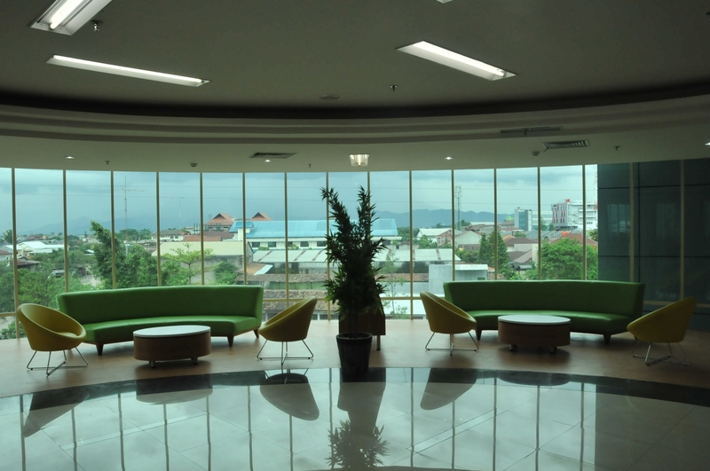

Membaca bukan merupakan kata yang asing bagi telinga masyarakat. Sampai sekarang, sudah banyak pepatah-pepatah bijak tentang membaca,namun kegiatan membaca itu sendiri semakin jarang dilakukan oleh masyarakat. Jika hal ini berkelanjutan secara-terus menerus, tentu saja budaya membaca itu sendiri akan memudar sampai akhirnya budaya membaca akan hilang dari diri masyarakat. Keadaan ini sungguh sangat memprihatinkan.
Budaya membaca dapat ditingkatkan dengan berbagai cara, salah satunya ialah memberitahukan fungsi dari membaca itu sendiri. Berikut dipaparkan beberapa fungsi membaca:
Untuk itu budaya membaca sangat dibutuhkan. Tanpa budaya membaca kita akan sulit untuk mencapai sebuah kesuksesan. Tanpa budaya membaca kita juga tidak bisa dengan mudah menjelajah dunia. Tanpa budaya membaca negara kita tidak akan pernah menjadi negara maju, negara kita akan selalu tertinggal, baik dari segi teknologi, ekonomi, pendidikan, dsb. Mulailah membaca sedini mungkin, tidak ada kata terlambat untuk membudidayakan budaya membaca, ingatlah kata pepatah, Better Late than Never.